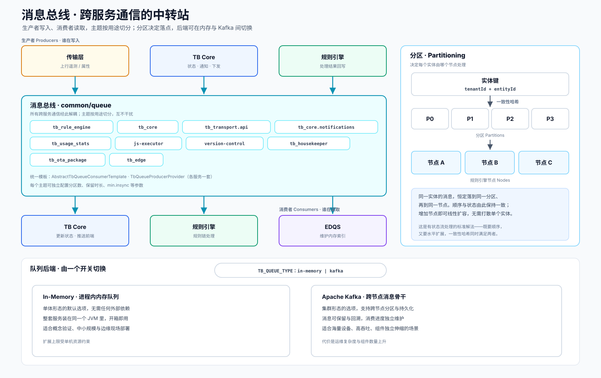

这一层在做什么
把两个服务直接连起来，是最省事的做法，却也把它们焊在了一起：一端出现抖动或重启，另一端会立刻受到牵连。消息总线插在中间，正是为了拆开这种紧耦合。传输层把数据写进队列就算交付完成，至于谁在什么时候取走、用多大的速度处理，它一概不必关心。
这种解耦还顺带提供了一个缓冲带。物联网场景的流量常常是突发的——某一刻成千上万台设备同时上报，下一刻又归于平静。消息先在队列里积压，处理层按照自身的承载能力从容消费，这样再陡峭的瞬时洪峰，也不会直接冲垮后端。代价是多了一跳延迟、以及一套需要运维的队列设施，对突发型负载而言，这笔投入通常是合算的。
内部结构
生产者在上、消费者在下，中间是按用途切分的主题；右侧是分区机制，底部是可切换的两种后端。

主题为什么要切分
不同用途的消息走不同的主题，互不干扰，也便于各自配置保留时长、分区数量与优先级。
| 主题 | 承载的消息 |
|---|---|
tb_rule_engine | 设备遥测与属性的主处理流，规则引擎从这里取走消息 |
tb_core | 设备状态、订阅、会话相关的消息，由 TB Core 消费 |
tb_transport.api | 传输层与 Core 之间的认证往返，分请求与响应两个子主题 |
tb_core.notifications | 高优先级、低时延的核心通知，单独成主题以保证及时 |
tb_usage_stats | 租户的用量计量数据 |
js-executor | 规则脚本的远程执行请求 |
version-control | 实体配置版本化操作 |
tb_housekeeper | 级联删除与过期数据的清理任务 |
tb_ota_package | 固件与软件包的分发 |
tb_edge | 与 Edge 实例之间的同步 |
分区机制：兼顾顺序与扩展
分区要解决的问题，用一个具体场景来说明会更清楚。假设此刻有三个规则引擎节点在并行工作，一台设备连续上报的若干条消息，应该交给谁来处理？如果只是简单地轮流分配，同一台设备的相邻消息就会散落到不同节点上——它们之间的先后顺序，以及各节点为这台设备维护的状态，都会因此错乱。
一致性哈希给出的解法是：拿设备的标识（tenantId + entityId）算出一个固定的归属，让同一台设备的消息，始终落到同一个分区，进而由同一个节点处理。顺序得到了保证，状态也自始至终由一个节点掌管；而当整体负载上升时，增加节点便能分摊更多分区，扩容因此是线性的。这是有状态流处理领域里相当通用的一种做法——既想要顺序，又想要水平扩展，一致性哈希恰好同时满足这两点。
两种后端，同一套抽象
业务代码面对的始终是"队列"这个抽象，底层换成内存还是 Kafka，由 TB_QUEUE_TYPE 一个开关决定。
| 对比项 | In-Memory | Apache Kafka |
|---|---|---|
| 形态 | 进程内内存队列 | 跨节点的消息骨干 |
| 外部依赖 | 无，开箱即用 | 需要独立的 Kafka 集群 |
| 持久化与回溯 | 不持久，重启即清空 | 消息可保留、可回溯，消费进度独立维护 |
| 适用规模 | 概念验证、中小规模、边缘现场 | 海量设备、高吞吐、组件独立伸缩 |
| 主要代价 | 扩展上限受单机约束 | 运维复杂度与组件数量上升 |
这正是架构弹性的来源：因为上层业务始终只面对队列这一抽象，底层是内存还是 Kafka 对它完全透明，所以同一套代码才能够从单体形态平滑成长为微服务集群。架构的弹性，往往就藏在这种让上层无感的抽象之中。
在整条链路中的位置
消息总线居于正中。它的上游是传输层与各个服务，下游则是负责实际处理的核心层。
几乎每一次跨服务的消息传递，都会在这里中转一次。总览页的端到端数据流里，无论是上行的遥测投递，还是下行的命令分发，中间那一跳大多落在消息总线上——对照着看，能更直观地感受到它中枢的角色。
源码位置
生产消费模板
队列的统一抽象与两种后端实现。
common/queue/common · kafka · memory各服务的 Provider
Core、规则引擎、传输等各自的队列生产者装配。
common/queue/provider主题与参数设置
主题名、分区数、保留策略等配置项。
common/queue/settings · thingsboard.yml